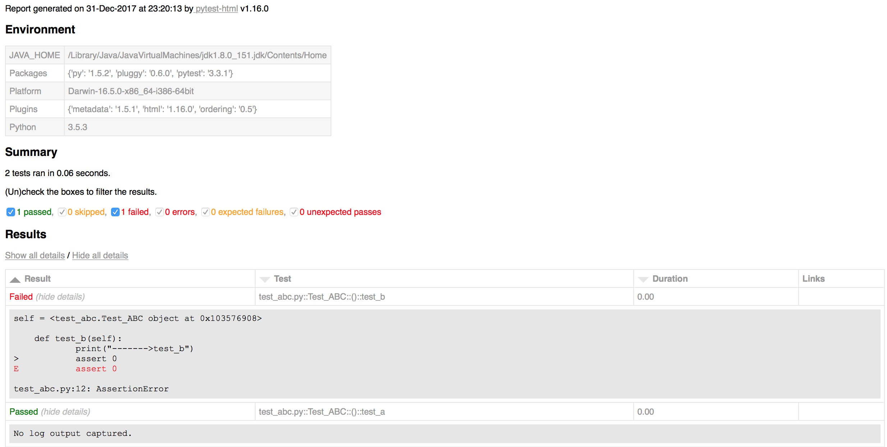

4.4.Pytest常用插件
插件列表网址：https://plugincompat.herokuapp.com
包含很多插件包，大家可依据工作的需求选择使用。
前置条件：
1.文件路径：
- Test_App
- - test_abc.py
- - pytest.ini
2.pyetst.ini配置文件内容：
[pytest]
# 命令行参数
addopts = -s
# 搜索文件名
python_files = test_*.py
# 搜索的类名
python_classes = Test_*
# 搜索的函数名
python_functions = test_*
- 4.4.1.Pytest测试报告
通过命令行方式，生成xml/html格式的测试报告，存储于用户指定路径。
插件名称：pytest-html
安装方式：
1.安装包方式 python setup.py install
2.命令行 pip3 install pytest-html
使用方法：
命令行格式：pytest --html=用户路径/report.html
示例：
import pytest
class Test_ABC:
def setup_class(self):
print("------->setup_class")
def teardown_class(self):
print("------->teardown_class")
def test_a(self):
print("------->test_a")
assert 1
def test_b(self):
print("------->test_b")
assert 0 # 断言失败
运行方式：
1.修改Test_App/pytest.ini文件，添加报告参数，即：addopts = -s --html=./report.html
# -s:输出程序运行信息
# --html=./report.html 在当前目录下生成report.html文件
⚠️ 若要生成xml文件，可将--html=./report.html 改成 --html=./report.xml
2.命令行进入Test_App目录
3.执行命令： pytest
执行结果：
1.在当前目录会生成assets文件夹和report.html文件

- 4.4.2.Pytest控制函数执行顺序
函数修饰符的方式标记被测试函数执行的顺序.
插件名称：pytest-ordering
安装方式：
1.安装包方式 python setup.py install
2.命令行 pip3 install pytest-ordering
使用方法：
1.标记于被测试函数，@pytest.mark.run(order=x)
2.根据order传入的参数来解决运行顺序
3.order值全为正数或全为负数时，运行顺序：值越小，优先级越高
4.正数和负数同时存在：正数优先级高
默认情况下，pytest是根据测试方法名由小到大执行的,可以通过第三方插件包改变其运行顺序。
默认执行方式
示例：
import pytest
class Test_ABC:
def setup_class(self):
print("------->setup_class")
def teardown_class(self):
print("------->teardown_class")
def test_a(self):
print("------->test_a")
assert 1
def test_b(self):
print("------->test_b")
assert 0
if __name__ == '__main__':
pytest.main("-s test_abc.py")
执行结果：
test_abc.py
------->setup_class
------->test_a # 默认第一个运行
.
------->test_b # 默认第二个运行
F
------->teardown_class
示例：
import pytest
class Test_ABC:
def setup_class(self):
print("------->setup_class")
def teardown_class(self):
print("------->teardown_class")
@pytest.mark.run(order=2)
def test_a(self):
print("------->test_a")
assert 1
@pytest.mark.run(order=1)
def test_b(self):
print("------->test_b")
assert 0
if __name__ == '__main__':
pytest.main("-s test_abc.py")
执行结果：
test_abc.py
------->setup_class
------->test_b # order=1 优先运行
F
------->test_a # order=2 晚于 order=1 运行
.
------->teardown_class
- 4.4.3.Pytest失败重试
通过命令行方式，控制失败函数的重试次数。
插件名称：pytest-rerunfailures
安装方式：
1.安装包方式 python setup.py install
2.命令行 pip3 install pytest-rerunfailures
使用方法：
命令行格式：pytest --reruns n # n：为重试的次数
示例：
import pytest
class Test_ABC:
def setup_class(self):
print("------->setup_class")
def teardown_class(self):
print("------->teardown_class")
def test_a(self):
print("------->test_a")
assert 1
def test_b(self):
print("------->test_b")
assert 0 # 断言失败
运行方式：
1.修改Test_App/pytest.ini文件，添加失败重试参数，即：addopts = -s --reruns 2 --html=./report.html
# -s:输出程序运行信息
# --reruns 2 ：失败测试函数重试两次
# --html=./report.html 在当前目录下生成report.html文件
2.命令行进入Test_App目录
3.执行命令： pytest
执行结果：
1.在测试报告中可以看到两次重试记录